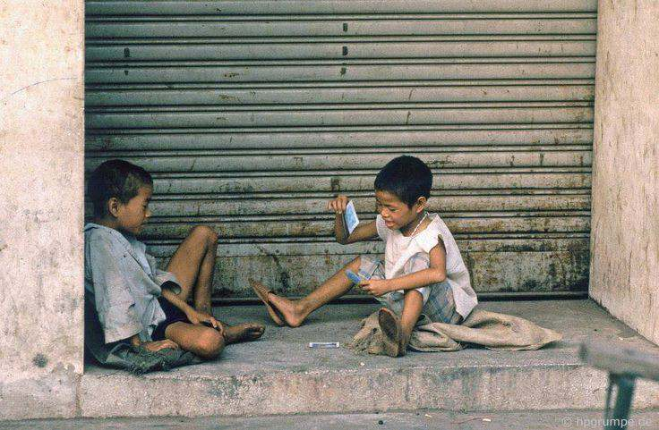
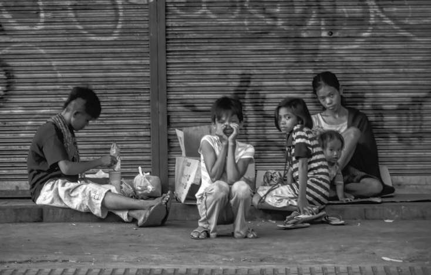

Poverty has gone extreme: Causes and Effects of Poverty in Luzon
Author: Alejano(2024)
Despite Luzon having the lowest percentage of poverty rate in the Philippines among the three main geographical divisions,
it still contributes significantly to the country's overall poverty rate, with its self-rated poverty rate of 55% and metro Manila's at 52%.
In the third quarter of 2024, a nationwide survey by Social Weather Stations (SWS) found that 16.3 million Filipino families considered themselves to be "poor."
This marks the highest level of self-reported poverty since June 2008, reflecting a one percentage point increase from the 58% reported in June 2024.
“Among all the regions in the Philippines, nine had poverty thresholds higher than the national average. This was led by Region III (Central Luzon) with a poverty threshold of PhP 16,046” (PSA, 2024).

Tondo, a slum in Manila, is home to some of the city’s poorest families, showing the severe poverty in Metro Manila.
Hunger is a big problem in Tondo, with 22.9% of Filipino families going hungry in September 2024—the second-highest rate since the pandemic.
In Payatas, a barangay in Quezon City with nearly 200,000 people, most residents live below the poverty line. The area, once known for its dumpsite that closed in 2010, still struggles with poverty today.
In Baseco, another poor community, 60% of families were below the poverty line in 2012, and by 2020, nearly 59% of households earned less than PHP 12,000 a month, reflecting ongoing hardship.

Poverty in Luzon has many causes.
Cities like Manila are overcrowded because people move there faster than the government can provide housing and jobs,
moreover, they also create more children than they could handle.
Typhoons, floods, and volcanic eruptions are examples of natural disasters that frequently strike the poorest areas the hardest,
making recovery even more difficult. Corruption and inefficiency in local governments make it difficult to address poverty effectively.
Many families also struggle because they don’t have access to quality education, which keeps them stuck in the cycle of poverty.
On top of this, there aren’t enough job opportunities, and many people have to rely on low-paying or unstable work to make ends meet.
In conclusion, despite Luzon having the lowest poverty rate in the Philippines, it still plays a major role in the country’s poverty crisis.
Serious issues including hunger, inadequate sanitation, and low earnings are present in places like Tondo, Payatas, and Baseco.
Families are caught in a cycle of poverty because of the reasons, which include natural disasters, corruption, overpopulation, lack of education, and lack of job opportunities.
Investing in strong infrastructure, expanding educational options, and generating more employment chances—particularly in rural areas—are excellent solutions.
It's time for us as a society to act; let's unite to end the poverty cycle and create a more just future for everybody.